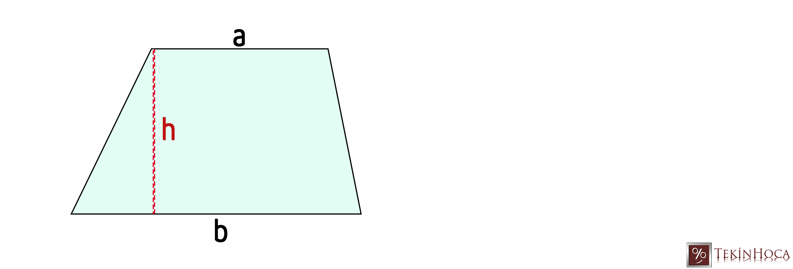

Eşkenar dörtgenin ve yamuğun alan bağıntılarını bulmak için, dikdörtgenin ve üçgenin alan bağıntılarından yararlanacağız.
▭ Dikdörtgenin alanı
Taban × Yükseklik
△ Üçgenin alanı
(Taban × Yükseklik) ÷ 2
Yamuk: Yalnızca bir çift kenarı birbirine paralel olan dörtgendir; bu paralel kenarlara taban denir.
Bir eşkenar dörtgenin köşegenleri birbirine dik olduğundan, dörtgeni köşegenleriyle dört dik üçgene ayırabiliriz. Bu üçgenler, kenarları d₁ ve d₂ olan bir dikdörtgenin tam olarak yarısını oluşturur.
Aşağıdaki araçta köşegen uzunluklarını kaydırıcılarla seçin; alan canlı olarak hesaplansın.
Bir yamuğun bir eşini (180° döndürülmüş kopyasını) yanına ekleyerek birleştirirsek, bir paralelkenar elde ederiz. Bu paralelkenarın tabanı, yamuğun iki tabanının toplamına (a+b) eşittir; yüksekliği ise yamuğun yüksekliğine (h) eşittir.

Aşağıdaki araçta tabanları ve yüksekliği kaydırıcılarla seçin; alan canlı olarak hesaplansın.
Boşluğu doldurun:
Doğru mu, yanlış mı?
| Şekil | Alan Bağıntısı |
|---|---|
| Eşkenar dörtgen | (d₁ × d₂) ÷ 2 |
| Yamuk | ((a + b) × h) ÷ 2 |